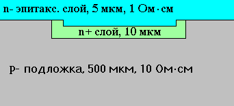

электронный
ресурс по учебной дисциплине 1-58 01 01 - "ИНЖЕНЕРНО-ПСИХОЛОГИЧЕСКОЕ ОБЕСПЕЧЕНИЕ ИНФОРМАЦИОННЫХ ТЕХНОЛОГИЙ"
|
||
| Оглавление | Программа | Теория | Практика | Контроль знаний | Об авторах | ||
|
Практика
ЛАБОРАТОРНАЯ РАБОТА №1 Исследование процессов эпитаксии Цель работы: Изучить процесс роста автоэпитаксиального слоя кремния из дихлорсилана и основные характеристики процесса. Оценить энергию, необходимую для проведения процесса эпитаксии. Написать программу и построить зависимости выходных параметров от входных. Теоретические сведения Эпитаксия – процесс выращивания тонких монокристаллических слоев на монокристаллических подложках. Существует 2 вида эпитаксии: 1) гомоэпитаксия (автоэпитаксия) – процесс называют автоэпитаксиальным или гомоэпитаксиальным, если материал слоя и подложки идентичен, например, кремний выращивают на кремнии. 2) гетероэпитаксия – процесс называют гетероэпитаксиальным, если материал слоя и подложки отличается (например, AlxGa1-x выращивается на GaAs). Наращивание имеет следующие характерные особенности: - процесс можно производить при температуре, меньшей температуры выращивания слитка монокристалла; - концентрация примесей и их распределение варьируются в широком диапазоне; - возможно получение эпитаксиального слоя с противоположным типом проводимости; - получаемый эпитаксиальный слой содержит меньше дефектов, связанных с примесью кислорода и углерода по сравнению с подложкой; - имеется возможность нанесения однородного по толщине тонкого эпитаксиального слоя на подложку большой площади; - эпитаксиальный слой может быть локально нанесен на определенном участке поверхности подложки. Причиной появления эпитаксиальной технологии послужила необходимость совершенствования процесса изготовления биполярных транзисторов. Эти приборы обычно формируются в объеме полупроводниковой подложки с большим удельным сопротивлением r, определяющим высокое напряжение пробоя база - коллектор Uбк. С другой стороны, высокие значения r приводят к увеличению рассеиваемой в полупроводниковой подложке мощности и уменьшению коэффициента усиления транзистора на высоких частотах. С целью разрешения этого противоречия была разработана технология получения высокоомных полупроводниковых слоев на низкоомной подложке. В настоящее время при изготовлении интегральных схем используются низкоомные эпитаксиальные слои с противоположным относительно подложки типом проводимости (рис. 1). Образующийся при этом p-n переход служит для электрической изоляции соседних транзисторов, а сильнолегированный n+ диффузионный слой используется в качестве коллекторного контакта. Ступенька, показанная на рисунке, применяется в дальнейшем при операциях самосовмещения в процессах литографии.  Рисунок 1 – Низкоомные эпитаксиальные слои с противоположным относительно подложки типом проводимости Слои, синтезированные по эпитаксиальной технологии, обладают следующими преимуществами: - широкая область изменения уровня и профиля легирования; - изменение типа проводимости выращиваемых эпитаксиальных пленок; - физические свойства эпитаксиального слоя отличаются от свойств материала подложки в лучшую сторону, например, в них меньше концентрация кислорода и углерода, меньше число дефектов; - процесс может происходить при температурах меньших, чем температура наращивания слитка монокристалла; - можно нанести эпитаксиальный слой на подложку большой площади; - эпитаксиальный слой может быть нанесен локально. Термин "эпитаксия" применяют к процессам выращивания тонких монокристаллических слоев на монокристаллических подложках. Материал подложки в этом процессе выполняет роль затравочного кристалла. Если материалы получаемого слоя и подложки идентичны, например, кремний выращивают на кремнии, то процесс называют автоэпитаксиальным или гомоэпитаксиальным. Если же материалы слоя и подложки различаются (хотя их кристаллическая структура должна быть сходной для обеспечения роста монокристаллического слоя), то процесс называют гетероэпитаксиальным. Эпитаксиальное выращивание кремния из парогазовой фазы обычно проводят в реакторе, изготовленном из стеклообразного кварца, на помещенном внутри него пьедестале (подложкодержателе). Пьедестал служит для установки подложек и их нагрева во время процесса. Выращивание кремния проводится в потоке парогазовой смеси при высоких температурах (рис. 1). Для выращивания эпитаксиального кремния используется один из четырех кремнесодержащих реагентов (тетрахлорид кремния – SiCl4, трихлорсилан – SiHCl3, дихлорсилан – SiH2Cl2 и силан – SiH4) и водород. При таких условиях возможно протекание химических реакций типа SiCl4 + 2H2 = Siтв + 4HCl Механизмы наращивания эпитаксиальных пленок. Выделяют прямые и непрямые механизмы. Непрямое наращивание происходит, когда атомы кремния образуются за счет разложения кремниевых соединений на поверхности нагретой подложки. Прямое наращивание происходит, когда атомы кремния непосредственно попадают на поверхность подложки и осаждаются на ней, как это имеет место при молекулярно-лучевой эпитаксии (рис. 2). 1 – экран; 2 – основа с водяным охлаждением; 3 – нить накала источника; 4 – электронный пучок; 5 – электростатический экран (-V); 6 – твердый кремний; 7 – расплавленный кремний; 8 – пары кремния; 9 – держатель подложки; 10 – кремниевая подложка; 11 – нить подогрева подложки; 12 – электронный пучок Рисунок 2 – Схема реактора для МЛЭ кремния (прямое наращивание кремния на подложке). При соответствующих условиях осаждения атомы кремния, двигаясь по нагретой поверхности, занимают положения, соответствующие кристаллической структуре подложки. Иными словами эпитаксиальное наращивание состоит в образовании центров кристаллизации и последовательном формировании двумерной решетки из островков, растущих вдоль поверхности. Процесс эпитаксиального наращивания на поверхности пластины (рис. 3) происходит в следующей последовательности: - массопередача вступающих в реакцию молекул посредством диффузии из турбулентного потока через граничный слой к поверхности кремния; - адсорбция молекул поверхностью; - процесс реакции на поверхности; - десорбция продуктов реакции; - массопередача молекул продуктов реакции посредством диффузии через граничный слой к основному потоку газа; - упорядочение адсорбированных атомов кремния в решетке.
Рисунок 3 – Формирование слоя кремния на подложке. Результирующая скорость роста пленки определяется самым медленным процессом в приведенной выше последовательности. В равновесных условиях все процессы протекают с одинаковыми скоростями и эпитаксиальный слой растет равномерно. Скорость роста слоя — 0,1-2,0 мкм/мин в зависимости от источника кремния, температуры и давления. Она пропорциональна концентрации кремнийсодержащего компонента в парогазовой фазе. Энергия активации процесса равна приблизительно 5 эВ и соответствует энергии активации самодиффузии кремния. Попытка увеличения скорости роста пленки выше оптимального значения, зависящего от температуры, приводит к росту поликристаллической пленки (уменьшается время поверхностной миграции и происходит встраивание кремния в произвольные, а не только кристаллографически благоприятные места). Задание для выполнения лабораторной работы Оцените энергию (в киловатт-часах), необходимую для проведения процесса роста (длительностью 1 ч) автоэпитаксиального слоя кремния из дихлорсиана. Скорость роста слоя X мкм/мин, температура роста 1100 °С, толщина слоя Y мкм, количество одновременно загружаемых в горизонтальный реактор подложек диаметром Z мм равно N шт. Варианты заданий:
Порядок выполнения работы 1. Напишите программу, обеспечивающую решение задачи. 2. Постройте зависимости выходных параметров от входных. 3. Оформите отчет и защитите лабораторную работу. Содержание отчета 1. Цель работы. 2. Краткие теоретические сведения. 3. Решение задачи. 4. Код программы и скриншоты рабочих окон. 5. Зависимости выходных параметров от выходных. 6. Выводы по работе. Контрольные вопросы 1. Что такое процесс эпитаксии? Какие виды эпитаксии Вам известны? 2. Опишите особенности процесса эпитаксии. 3. Опишите преимущества, которыми обладают слои кремния, синтезированные по эпитаксиальной технологии. 4. Опишите схему реактора для молекулярно-лучевой эпитаксии кремния. 5. Какие существуют механизмы выращивания эпитаксиальных слоев. 6. В какой последовательности проходит процесс эпитаксиального наращивания кремния на поверхности пластины. Практика
|
| (С) БГУИР |